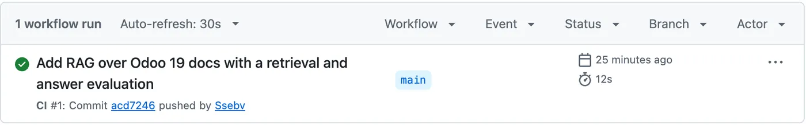

Cómo organizo el desarrollo: proceso y arquitectura
Organizo el software en torno a tres ideas: límites claros entre las partes, entregas que se pueden verificar y una producción que informa su propio estado. Esta página muestra el proceso y luego la arquitectura de cinco sistemas reales, con el porqué de cada uno.
Del plan a producción
- Plan
- Rama corta
- Pruebas por capas
- Revisión
- Staging
- Producción
- Monitoreo
Dejar escrito cómo funciona el proyecto
Los proyectos tienen un documento corto: cómo instalarlo, cómo probarlo y qué no tocar. Los sistemas más grandes también tienen un documento por módulo, que se actualiza en el mismo commit que el código, y un registro de decisiones de arquitectura con sus compromisos. Pasos para instalar y probar de un repo público.
Planificar antes del trabajo riesgoso
Todo lo grande, o lo que toque pagos, producción, documentos tributarios o datos personales, parte con un plan escrito antes de cambiar un solo archivo.
Trabajar en ramas cortas
Cada cambio es lo bastante chico para revisarlo por separado, y las pruebas corren después de cada bloque. La app de iPhone de Norte creció así, por rondas numeradas: pruebas, revisión, merge y despliegue.
Probar por capas
Los tipos atajan los errores simples, las pruebas unitarias la lógica, las de base de datos las reglas de acceso y las de punta a punta el flujo completo. La integración continua de Citofonía corre todas contra una base local, y falla si los tipos generados desde la base están desactualizados. Las pruebas automáticas usan datos de prueba y ninguna credencial real. Los flujos críticos del ERP tienen unos 180 archivos de prueba, y ensayé su migración en una copia de producción antes del corte.
$ uv run pytest -q10 passed in 0.16s$ gh run list -R Ssebv/odoo-rag -L 1 --json conclusion,status -q '.[0]'{"conclusion":"success","status":"completed"}Repetición de comandos reales.

Integración continua en el repo público. Medir lo que las pruebas no ven
Que una prueba pase no dice si una respuesta de IA es buena. Para eso construyo evaluaciones y comparo opciones con las mismas preguntas. En Odoo RAG, así descubrí que traducir importaba más que la búsqueda híbrida.
Revisar, y contrastar lo que se afirma con el código
Los cambios pasan por revisión de código antes del commit, y por revisión de seguridad si tocan autenticación, pagos o datos personales. También vale para lo que escribo sobre mi trabajo: una revisión detectó que un artículo mío decía que un monitoreo corría cada seis horas, y el código decía que una vez al día. Corregí el artículo.
Desplegar por etapas
En el ERP, el trabajo pasa de una rama de desarrollo a staging y luego a producción. Los despliegues a producción se hacen solo fuera del horario laboral de los tres países, porque cada build reinicia el servidor. En la migración comparé el resultado contra una línea base previa: facturas, pedidos y despachos quedaron idénticos.
Vigilar en producción
Un health check diario corre más de 40 detectores, con alertas urgentes cada 30 minutos. Escribí sobre lo que encontró, incluido el detector mío que estaba seguro y equivocado.
Arquitectura de cinco sistemas
Cada sistema tiene restricciones distintas, así que cada uno tiene una forma distinta. Los diagramas se leen de arriba hacia abajo, desde quienes usan el sistema hasta donde viven los datos. La parte destacada es la que define el diseño.
ERP en Odoo 19
Un ERP en producción para 4 empresas en 3 países, alojado en Odoo.sh. El código es privado.
- Canales
- Administración
- Consignación con retail
- Mercado Libre
- Yuju
- 18 módulos propios
- Núcleo común: ventas, stock, facturas
- Consignación
- Facturación por despacho
- Informes
- Localización tributaria
- Chile · SII
- Colombia · DIAN
- Perú · SUNAT
- Plataforma
- Odoo 19
- PostgreSQL con invariantes
- Health check y alertas
- Menos módulos, responsabilidades más claras. Consolidé 41 módulos propios en 18, así hay menos que actualizar y la lógica común tiene un solo lugar.
- Las reglas críticas viven en la base de datos. Un trigger de PostgreSQL impone la invariante del stock en consignación, y ningún flujo ni script puede saltársela.
- Campos explícitos, no convenciones de nombres. Una reorganización de bodegas obligó a cambiar 45 puntos en 7 módulos que dependían del nombre de la ubicación. La regla ahora es identificar la consignación por un campo.
Citofonía
Un citófono digital para edificios, en desarrollo. Es un monorepo con pnpm y Turborepo: una app móvil, un panel de administración, una API y paquetes compartidos para los tipos de la base y la interfaz. El código es privado.
- Clientes
- App del residente · React Native, Expo
- Tablet de conserjería
- Panel de administración · React, Vite
- API en el borde
- Hono en Cloudflare Workers
- Llamadas
- Puertas
- Avisos push
- Invitaciones
- Votaciones
- Estado de la llamada
- Un Durable Object por unidad: la llamada
- Uno por estación: el límite de llamadas
- Datos y medios
- Supabase PostgreSQL con seguridad por fila
- LiveKit para las llamadas
- La base de datos impone el acceso. Para los datos del día a día, las apps hablan directo con PostgreSQL, bajo seguridad por fila probada con pgTAP. La API se encarga de lo que la base no puede hacer, como llamadas, puertas, avisos e invitaciones.
- La llamada vive en el servidor, no en un dispositivo. Cada unidad tiene una máquina de estados en un Durable Object, con sus propias alarmas. Las pruebas corren la misma lógica con una versión en memoria.
- El hardware de las puertas está detrás de una sola interfaz. Un driver tiene un método,
openDoor. Hoy hay dos, para la tablet y para un relé HTTP, y un sistema de puertas nuevo significa un driver nuevo. - Las migraciones no se editan. Hay una por tema y van 105. Los tipos se generan desde el esquema, y la integración continua revisa que estén al día.
Norte
Una app personal de finanzas y salud con clientes nativos y web. El código es privado.
- Clientes
- iPhone, Apple Watch y widgets · SwiftUI
- Web · Next.js, React
- API
- Una sola API REST JSON para todos los clientes
- Revisión de sesión en cada consulta
- Dominio
- Finanzas
- Entrenamiento
- Alimentación
- Hábitos
- Datos y servicios
- SQLite
- Lector de correos del banco · IMAP
- API de Anthropic, con salida validada
- Alojamiento
- VPS
- Caddy
- systemd
- Una sola API para todos los clientes. El iPhone y la web usan los mismos endpoints, así que cada regla de negocio se escribe una vez.
- Sin dependencias de terceros en iOS. La app usa solo lo que trae la plataforma, así que no hay nada externo que actualizar o auditar.
- Una base de datos en un solo archivo. Una app de un usuario no necesita un servidor de base de datos. SQLite simplifica el alojamiento y los respaldos.
- Las pruebas de pantalla están aisladas. Corren contra un servidor local con una base temporal y datos de demostración, y se niegan a correr contra producción.
FlagForge
Feature flags multi-tenant en Rust. Tiene su propia página, y el código es público.
- Clientes
- SDK para servicios
- Panel · Leptos, WebAssembly
- Operadores e integración continua
- API · axum
- Evaluación, desde memoria
- API de administración
- Caché de snapshots
- Motor
- flagforge-core: funciones puras, sin I/O
- Datos
- flagforge-storage: SQL revisado al compilar
- PostgreSQL, LISTEN/NOTIFY
- La parte que debe ser correcta no tiene I/O. La evaluación es una función pura del flag, el contexto y el entorno (salt y segmentos), así que se puede probar a fondo.
- Un motor, tres consumidores. El servidor, el SDK y el editor de reglas del panel reutilizan el mismo crate, así que no pueden contradecirse.
- Un cambio de esquema rompe el build, no producción.
sqlxverifica cada consulta contra el esquema real al compilar.
ModoMax
Una tienda online. Las decisiones de su asistente tienen su propia página. El código es privado.
- Clientes
- Tienda
- Panel de administración
- Aplicación
- Una sola app Next.js: páginas, server actions, rutas de API, tareas programadas
- Dominio y validación
- Prisma
- Zod
- Registro de auditoría
- Datos y servicios
- PostgreSQL, solo acceso local
- Pagos
- Documentos tributarios
- Correo
- API de Anthropic
- Alojamiento
- VPS
- Caddy
- systemd
- Una sola aplicación desplegable. Para una tienda de este tamaño, una app en un VPS es más fácil de operar y depurar que varios servicios separados.
- La base de datos no está expuesta. PostgreSQL acepta solo conexiones locales.
- Los cambios de esquema van por migraciones. Producción usa
prisma migrate deploy, nuncadb push.
Reglas que mantengo
- Sin despliegues a producción del ERP en horario laboral de ninguno de sus tres países.
- Los secretos no entran a los repositorios.
- Una migración ya commiteada no se edita.
- Las pruebas automáticas no tocan producción, y los datos de ejemplo siempre son ficticios.
- Los cambios difíciles de revertir requieren una decisión explícita antes.